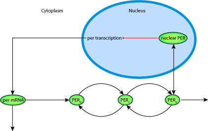
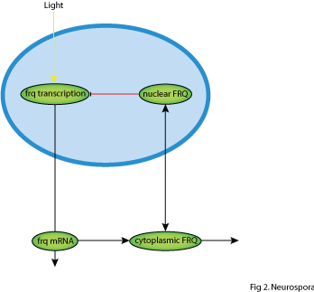
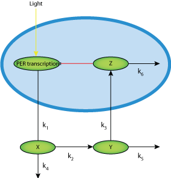

This CellML model runs in OpenCell and COR. It is based on 3 different models: the a model is the goldbeter_1995 model and the b model is the leloup_gonze_goldbeter_1999b model. Both are available in the CellMl model repository. The c model comes from this paper and is based on equations 2.9, 2.10 and 2.11 in the published paper.
ABSTRACT: Circadian rhythms, which occur spontaneously with a period of about 24 h in a variety of organisms, allow their adaptation to the periodic variations of the environment. These rhythms are generated by a genetic regulatory network involving a negative feedback loop on transcription. Mathematical models based on the negative autoregulation of gene expression by the protein product of a clock gene account for the occurrence of self- sustained circadian oscillations. These models differ by their degree of complexity and, hence, by the number of variables considered. Some of these models can be considered as minimal because they contain a reduced number of biochemical processes and variables capable of producing sustained oscillations. In three of these minimal models, the period of the oscillations significantly changes with the rate of degradation of the clock protein. However, depending on the model considered, the period increases, decreases or passes through a maximum as a function of the protein degradation rate. We clarify the bases for these markedly different results by bringing to light the roles of (i) protein phosphorylation, which is required for protein degradation, and (ii) the velocity and degree of saturation of mRNA and protein degradation. Changes in the parameter values of the more complex of the minimal models can produce the period profiles observed in the other two models. The analysis allows us to reconcile the contradictory predictions for the dependence of the period on the clock protein degradation rate in three minimal models used to describe circadian rhythms.
The original paper reference is cited below:
Dependence of the period on the rate of protein degradation in minimal models for circadian oscillations , Claude Gerard, Didier Gonze, Albert Goldbeter, 2009, Phil. Trans. R. Soc. A , 367, 4665-4683. PubMed ID: 19884174
|  |
| Schematic Diagram of Model A, the goldbeter_1995 model |
|  |
| Schematic Diagram of Model B, the leloup_1999 model |
|  |
| Schematic Diagram of Model C, the model based on equations 2.9, 2.10 and 2.11 in the published paper |